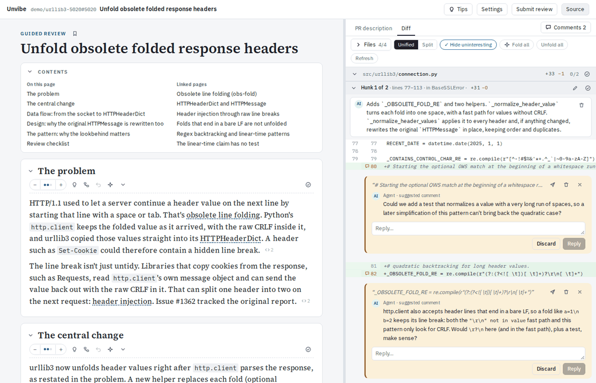

Install
You need Node 24 or newer, git, and gh logged in (for pull requests and submitting; local branches work without it). For the guide itself, the claude and/or codex command-line tools, installed and logged in. Diagrams need the d2 program; without it everything else works. Unvibe runs on macOS and Linux.
npm install -g github:indigoviolet/unvibe#release
unvibe openThe install runs setup itself: it starts the service at every login and places the unvibe:// link handler. unvibe open prints a link with your token — open it once to connect the browser, then bookmark the plain address:
http://unvibe.localhost:4517The bookmark keeps working across browser restarts.
If nothing answers
The service is not running. Start it with unvibe start, or run unvibe setup so it starts at every login. If the address itself does not resolve — Safari may not turn *.localhost names into addresses — run unvibe open instead, which opens the numeric address. For anything else, run unvibe doctor, or open Settings → Environment in the app.
Update
Install again, or switch channels from inside the app:
npm install -g github:indigoviolet/unvibe#release
unvibe update <channel>Uninstall
unvibe stop
unvibe setup --uninstall
npm uninstall -g unvibeThis keeps your reviews on disk. To remove those too, delete the data folder, ~/.local/share/unvibe.